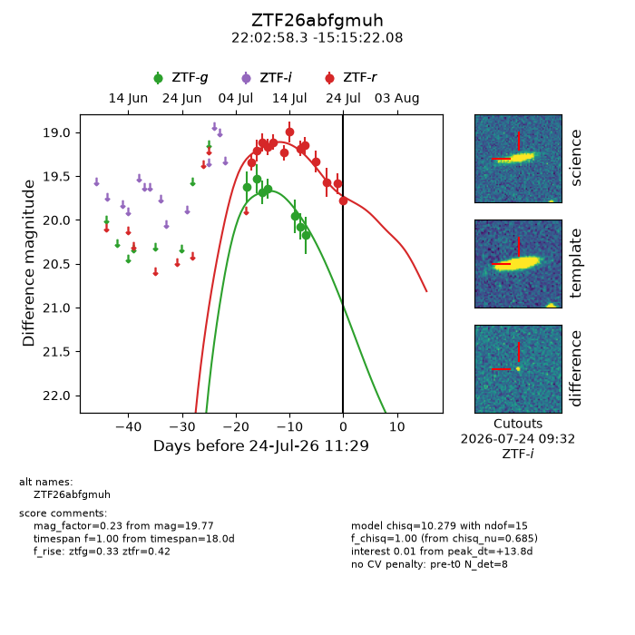
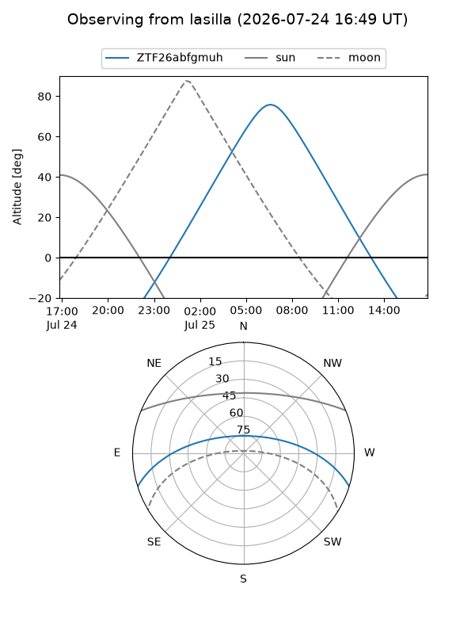
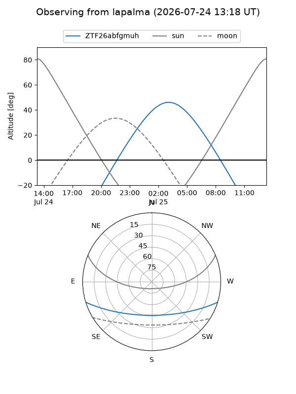
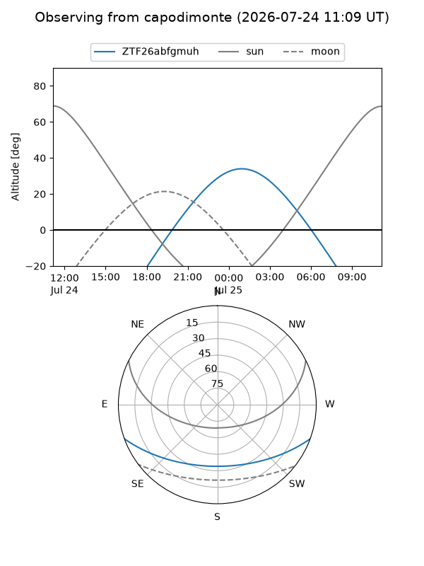
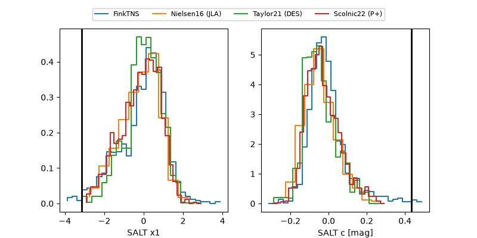

ZTF26abfgmuh
Target ZTF26abfgmuh at 2026-07-24 11:31
Aliases and brokers:
FINK-ZTF: ztf.fink-portal.org/ZTF26abfgmuh
Lasair-ZTF: lasair-ztf.lsst.ac.uk/objects/ZTF26abfgmuh
ALeRCE-ZTF: alerce.online/object/ZTF26abfgmuh
Direct TNS query: direct search
alt names
ZTF26abfgmuh (ztf,fink_ztf)
Coordinates:
equatorial (ra, dec) = 330.7431,-15.25613
equatorial (HMS+DMS) = 22:02:58.34,-15:15:22.08
galactic (l, b) = (41.0365,-49.19154)
Flags:
peak dt: +13.8
Photometry:
last ztfg=20.17, ztfr=19.77
7 ztfg, 13 ztfr detections
Lightcurve

Visibility



Additional plots
